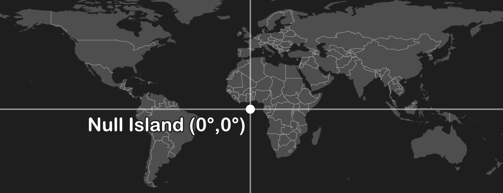
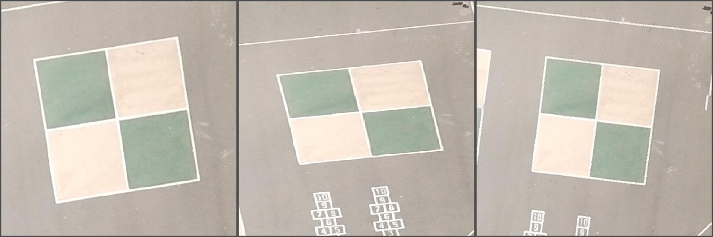
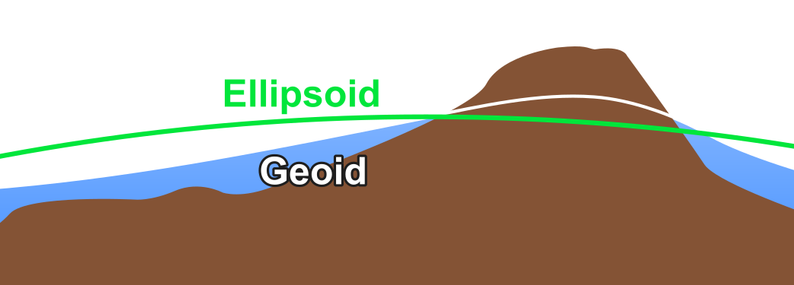

🤬 I Hate Coordinate Systems! 🤬
Coordinate reference systems (CRSs) are a thorn in the side of many geospatial professionals. It's easy to get by when things are working, but if there's a problem it's hard to even know what to search for.
This is a problem-based guide of common CRS issues, root causes, and solutions.
- How do I wrap my head around these things?
- My dataset is off the coast of Africa!
- My dataset looks like it's bigger than the Earth!
- My dataset is not located where it should be!
- What coordinate system should my dataset be in?
- My dataset is slightly offset from where it should be!
- How do I redefine a dataset's coordinate system?
- My measurements are bigger or smaller than they should be!
- Why is Mercator used if it's so distorted?
- Why don't we always use longitude/latitude?
- My X- and Y-values are OK, but my Z-values (heights, elevations) are off!
- What do all these terms mean?
I hate coordinate systems! How do I wrap my head around these things?
Apply this three-part mental model of geospatial datasets. Many common problems happen when one of these parts is missing or out of sync.
Attributes: the meanings or labels of a data point.
Coordinates: numbers describing the data point's position in space.
Coordinate (reference) system: metadata describing the space itself: origin, axes, units, etc.
For example:
Attributes: "The White House" or "1600 Pennsylvania Avenue"
Coordinates: (-77.0367, 38.8976)
Coordinate (reference) system: WGS84 longitude,latitude
I hate coordinate systems! My dataset is off the coast of Africa!
Your dataset probably has some junk coordinates. Many data formats store "null" as zeroes. If your software is assuming a longitude/latitude geographic coordinate system (GCS), then the point with coordinates (0, 0) is where the equator crosses the prime meridian off the coast of Africa (humorously known as Null Island). This can sometimes happen when importing from Excel and empty rows are not trimmed off.
Solution: Remove the data points from your dataset whose coordinates are null.
I hate coordinate systems! My dataset looks like it's bigger than the Earth!
Your dataset probably has its coordinate system wrongly defined as a longitude/latitude geographic coordinate system (GCS). This can happen if the coordinate system is missing altogether, in which case GIS software often assumes a GCS without telling you. A GCS only ranges from -180° west to +180° east in the X-axis and -90° south to +90 north in the Y-axis. If the coordinates in your dataset are out of this range then your dataset will look like it's off of the Earth.
Solution: Redefine the coordinate system, i.e. change the coordinate system but not the coordinates, from the GCS to the correct coordinate system.
I hate coordinate systems! My dataset is not located where it should be!
Your dataset probably has the wrong coordinate system. This is the more general case of the previous problem. This can happen if the coordinate system is missing altogether, in which case GIS software often assumes that it is the same coordinate system as a previously loaded dataset, or the coordinate system set in the "project" or "map document".
Solution: Redefine the coordinate system, i.e. change the coordinate system but not the coordinates, to the correct coordinate system.
I hate coordinate systems! What coordinate system should my dataset be in?
Look at the two things you do know: the attributes and the coordinates. A data point's attributes gives context to where on the Earth it is located. Most GIS software will display the minimum and maximum coordinates in the layer's properties as "extent" or "bounding box". From these, do some detective work on the coordinate system which you should use when redefining your dataset.
Solutions:
- If the attributes indicate the approximate longitude,latitude where the coordinates should be located, try doing a reverse lookup. This iterates over every well-defined coordinate system, unprojects the X,Y coordinates to WGS84, and measures the error to the known longitude,latitude. Errors less than a few hundred meters denote a reasonable projection, though this isn't precise enough to determine the GCS. You can run this sample code yourself, or use this form:
I hate coordinate systems! My dataset is slightly offset from where it should be!
Your dataset probably has the wrong longitude/latitude geographic coordinate system (GCS). Different GCSs define slightly different
sizes/shapes of the Earth (their ellipsoids) and different positionings on the Earth (their
datums). As a result, the same longitude/latitude coordinates in two
different GCSs can appear offset, although typically within tens of meters of each other. This can
happen even if you are using a projected coordinate system (PCS) whose units are not degrees of
longitude/latitude since PCSs have a GCS embedded within them. 
Solution: Redefine the coordinate system, i.e. change the coordinate system but not the coordinates, to one of the following
- Try redefining to the WGS84 GCS.
- If your dataset was collected with GPS , try redefining to WGS84.
- If your dataset was collected with GLONASS , try redefining to PZ-90.
- If your dataset was collected with Galileo , try redefining to ITRF.
- If your dataset is in the USA , try redefining to NAD27, NAD83, or WGS84.
- If your dataset is in Europe , try redefining to ED50, ETRS89, or WGS84.
- If your dataset is in Australia , try redefining to GDA94 or GDA2020.
- If your dataset is in China and/or collected with BeiDou, good luck.
I hate coordinate systems! How do I redefine a dataset's coordinate system?
It depends on your software. Remember, redefining means the metadata about the coordinate system is modified but the coordinates are not. This contrasts with reprojections and transformations, which modify both the coordinate system and the coordinates.
Solutions:
- In ArcGIS Pro, use the Define Projection tool, not the Project tool.
- In ArcMap, use the Define Projection tool, not the Project tool.
- In QGIS, for vector datasets, use the Assign Projection tool in the Vector General toolset, not the Reproject Layer tool.
- In QGIS, for raster datasets, use the Assign Projection tool in the "GDAL" toolset, not the Warp (Reproject) tool.
- From the command line, for vector datasets, use ogr2ogr with the -a_srs parameter, not the -t_srs parameter.
- From the command line, for raster datasets, use gdal_edit.py with the -a_srs parameter.
I hate coordinate systems! My measurements are bigger or smaller than they should be!
Your dataset is probably in a non-equidistant coordinate system. Most GIS software stupidly calculates distances, areas, and volumes using Euclidean math in the dataset's or data frame's coordinate system, regardless of whether it is equidistant. Depending on the amount of distortion associated with the projection, this can lead to (wildly) incorrect measurements without you realizing. In the common case of the Mercator projection, distances are enlarged by about 1/cos(latitude).
Solutions:
- Reproject your dataset (changing both the coordinates and coordinate system) to an appropriate "local" coordinate system. A local coordinate system is tuned to offer very accurate Euclidean measurements for a constrained region of the Earth. Examples include UTM, Gauss-Krüger, State Plane, and equidistant national grids like the Equidistant Conic.
- Perform geodesic measurements. This unprojects the coordinates to longitude/latitude (if projected) and then calculates precise distance along the GCS's ellipsoid. But beware: each calculation is slower than the Euclidean version, and the improvement in accuracy is marginal versus a local coordinate (the previous solution) unless you require sub-centimeter accuracy. This is done by default in QGIS, can be enabled in ArcGIS Pro and ArcMap, and can be performed programmatically with open-source libraries like GeographicLib.
I hate coordinate systems! Why is Mercator ever used if it's so distorted?
Mercator is the only conformal cylindrical map projection. Cylindrical map projections mean the whole Earth fits into a rectangle, which is very convenient for data processing algorithms that are used to working with rectangular images. Conformal means that angles and shapes are always preserved: north is always up, squares are always square, etc. Using a non-conformal projection would make things look stretched, squashed, and/or rotated when zooming in.
| Mercator (cylindrical) | Lambert Cylindrical | Albers Conic |
| ✅ Shape | ❌ Shape | ✅ Shape |
| ✅ Rotation | ✅ Rotation | ❌ Rotation |
| ❌ Area | ✅ Area | ✅ Area |
Mercator does enlarge areas farther from the equator, but at least this distortion is the same horizontally and vertically. And it's trivial to calculate a scale factor to correct measurements. The only time the distortion is problematic is when viewing a global-scale map with a range of different scale factors, but most maps are not global-scale and there are plenty of better projections to use for this case.
I hate coordinate systems! Why don't we always use longitude/latitude?
Good question. There are a bunch of reasons we use planar projected coordinate systems rather than just sticking with latitude,longitude geographic coordinate systems all the time:
- Planar measurements are ubiquitous. Common GIS features like property boundaries, road centerlines, forests, lakes, etc. are all reckoned in Euclidean distances, areas, and volumes - not in terms of angles.
- Planar measurements are easier to calculate. Measuring distances on a plane with the Pythagorean theorem is easier than along a sphere with the Haversine formula and way easier than along an ellipsoid with the Vincenty's formulae, to say nothing of areas or volumes.
- Planar measurements can be more accurate. Tectonic drift is not negligible; Australia is drifting around 7 cm per year. Referencing locations in terms of meters from a fixed monument on the same tectonic plate can avoid errors that accumulate over time when referencing against a global datum. Temporal datums try to solve this, but they have limited software support.
- Longitude was hard to figure out before GNSS. Reliable means of determining longitude are only a couple hundred years old, and GPS only a couple decades old. There is a lot of inertia in surveying and geodesy using Cartesian distances from fixed monuments.
I hate coordinate systems! My X- and Y-values are OK, but my Z-values (heights, elevations) are off!
Your dataset is probably measuring height above the ellipsoid instead of above sea level (geoid), or vice-versa. Sea level follows the geoid, a surface which is lumpy because of minute regional variations in gravity. GNSS like GPS do not measure the height above the geoid but rather the idealized mathematical representation called the ellipsoid. Some GPS devices automatically convert ellipsoidal height to height above sea level (aka orthometric height aka geoidal height), but many do not.
Solution: Use cs2cs in PROJ, or alternatively an older tool like VDatum, to convert between ellipsoidal and orthometric (above sea level) heights. For a reasonably small dataset, a constant offset can be applied to all Z-coordinates.
I hate coordinate systems! What do all these terms mean?
Here's a glossary:
- Attributes: the meanings or labels of a data point
- Coordinate (reference) system (CRS): metadata describing the space in which coordinates exist, e.g. origin, axes, units, etc.
- Coordinates: numbers describing a data point's position within a CRS.
- Datum: a precise reference frame calculated from a collection of known reference points; one part of a GCS.
- Ellipsoid: a mathematical approximation of the size and shape of the earth; one part of a GCS.
- Extent: the minimum and maximum values of the coordinates.
- Geographic coordinate system (GCS): a coordinate system with angular longitude,latitude units in degrees; composed of a datum and an ellipsoid.
- Geoid: an imaginary surface similar to sea level if landmasses were "cut away"; unlike the smooth ellipsoid, the geoid is lumpy due to regional variations in gravity.
- GNSS: global navigation satellite system for precisely global positioning; the most common are GPS , GLONASS , BeiDou , and Galileo .
- Project: the act of converting coordinates from a ellipsoidal longitude,latitude GCS to a planar x,y PCS using a projection.
- Projected coordinate system (PCS): a planar coordinate system with Euclidean x,y units (not angles); composed of a GCS and a projection.
- Projection: an algorithm for converting angular longitude,latitude coordinates in a GCS to a plane (a PCS) on/near the Earth's surface, e.g. Mercator, Equidistant Conic, Stereographic, Dymaxion. Different zones (e.g. UTM) are the same fundamental projection with different parameters.
- Redefine projection: the act of changing the coordinate system without changing the coordinates.
- Reproject: the act of changing the coordinate system and changing the coordinates. Typically done by unprojecting from the PCS to the old GCS, transforming to new GCS (if different), and projecting to the new PCS.
- Transform: the act of changing between two GCSs. There are often multiple transformation algorithms for a given pair of GCSs; the best choice depends on the location of your data within the GCS.
- Unproject: the act of converting coordinates from a planar x,y PCS to an ellipsoidal longitude,latitude GCS; the inverse of project.